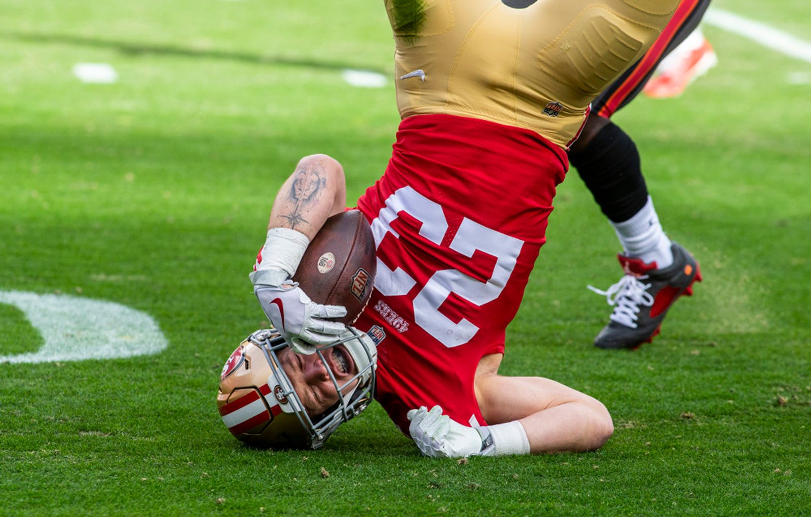
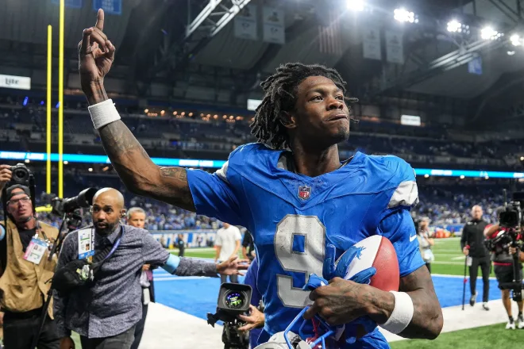
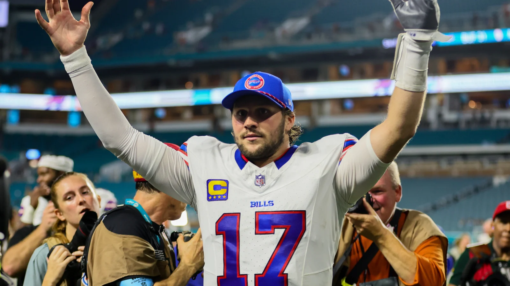
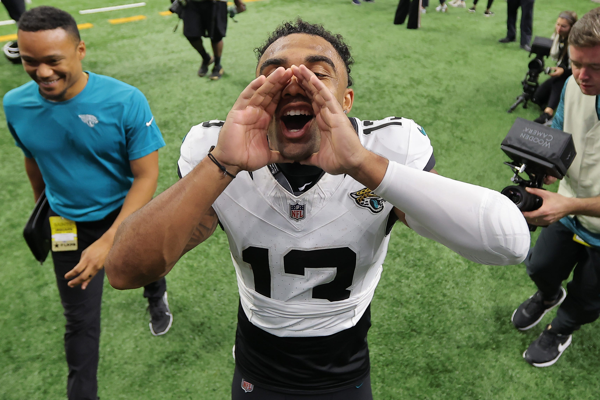
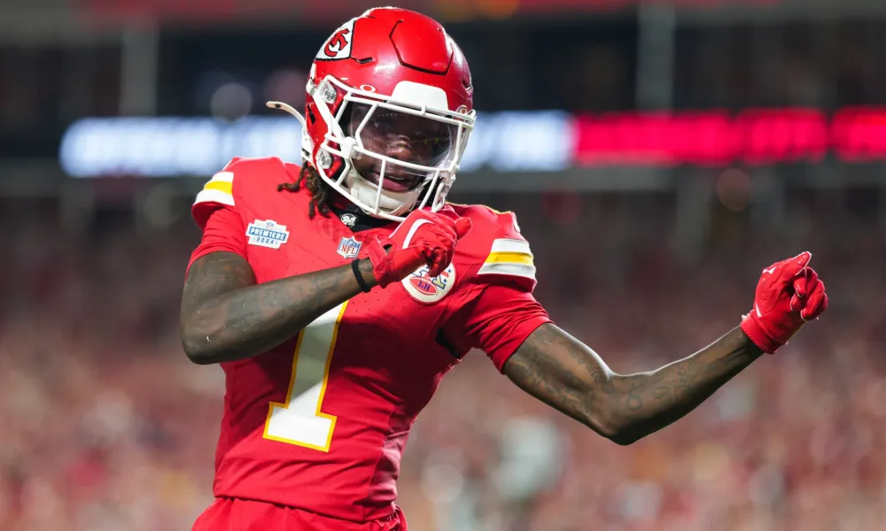
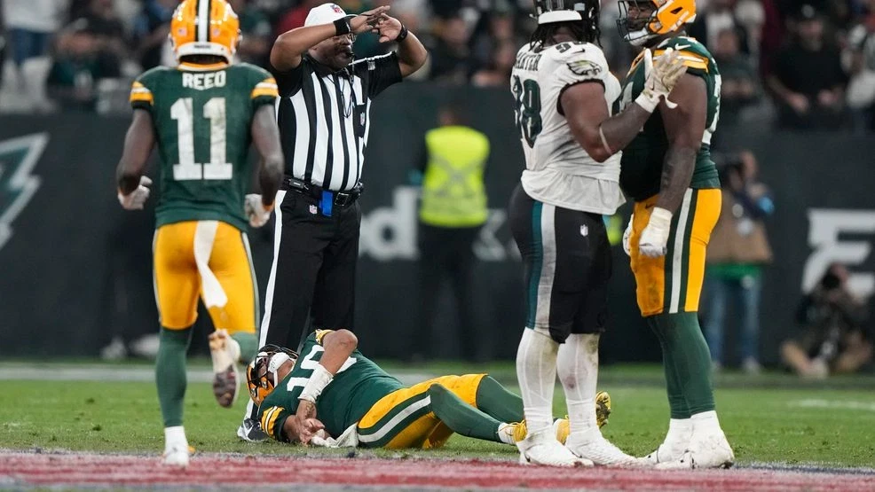
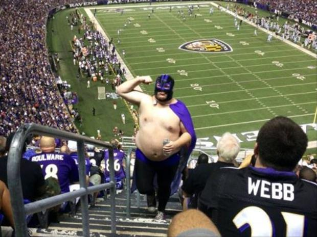

Kickers, man, totally kickers. That was a pretty strange week of football, so I think we’ll learn a lot in Week Two.
Matchup of the Week: Wont You Be My Nabers (1-0) v. Griddy Griddy Bang Bang (1-0) Let’s see how real it is for Seif, as the big mover this week. Cook has Joel out to a good start, but my eyes will be fixed on all the rookies in this matchup, with Brian Thomas Jr. for Joel, and Bowers and Nabers for Seif.
Waiver Wire Wizard: How could it not be Pangy? He blew half of his load the first week, so let’s see if it was worth it.
Isaiah Likely $27 - This one makes a lot of sense. Not only could it just be the best Week One pickup that we remember for the year, but Pangy has Andrews too, this is a great insurance policy on top of the potential gains.
Allen Lazard $13 - I mean, shit, he could be the best value if Aaron keeps going to him, they are best friends after all.
Wan’Dale Robinson $9 - Had a nice target share, but I can’t get behind any Giant right now.
After seeing one week of football, I know everything that I need to know. So yeah, this week is another week that feels like overreacting, so let’s lean into that.

1. Seif (1-0, PF: 143.36) ⬆️⬆️⬆️⬆️⬆️⬆️⬆️⬆️⬆️
Reaction: Giants are terrible, Nabers will be lucky to get in a rhythm with Jones. Overreaction: Jameson Williams is the new WR1 in Detroit. Move over Amon-Ra!
2. Jake (1-0, PF: 144.38) ⬆️⬆️
Reaction: Cooper Kupp is healthy and all the way back. Let’s go. Overreaction: Anthony Richardson will complete multiple 50-year bombs a game and will remain healthy forever!

3. Neil (1-0, PF: 122.38) ⬆️⬆️
Reaction: Josh Allen was made in a Fantasy Football factory by a carpenter named Jesus. Overreaction: Dalton Kincaid is the biggest bust of the 2024 season, what a terrible keeper!
4. CJ (0-1, PF ) ⬆️⬆️
Reaction: Achane is him. If he stays healthy, he’s the most valuable valuable pick in the draft. Overreaction: Achane is him. If he stays healthy, he’s the most valuable valuable pick in the draft.

5. Joel (1-0) ⬆️⬆️⬆️
Reaction: Christian Kirk is trash, it’s Brian Thomas Jr.’s room now. Overreaction: Mahomes is no longer a premium starter at QB. (he just wins)
6. Andy (1-0) ⬇️⬇️⬇️
Reaction: Mike Evans is like a 1999 Volvo, he’s still going and has probably another 100,000 miles in him. CMC to IR means this ranking is probably too nice. Overreaction: Marvin Harrison Jr. is a bust! 4 yards, and straight to Turner’s bench. What a waste!

7. Tony (0-1) ⬇️⬇️⬇️⬇️⬇️⬇️
Reaction: I’m an idiot and this team should have never been #1. Lots of okay-but-not-great weeks from Tony’s squad. Bench looks weak. Overreaction: Xavier Worthy is 10000000% Tyreek 2.0 after having three touches in Week One.
8. PJ (0-1) ⬇️
Reaction: Ja’Marr Chase is only showing up so he gets paid. Man is not interested in being worth where he was taken in fantasy drafts. Overreaction: The Bears missed big with Caleb Williams, did you see that trash!?

9. Kris (0-1) ⬇️ ⬇️
Reaction: Jayden Reed is a focal point of the Green Bay offense. What does that look like with a different QB though? Overreaction: Kris’s best week has already happened. Love: Hurt, Walker: Hurt, Tua: Dead, Hill: Downgrade with Tua dead, Kelce: saving for the playoffs, Odenze: Hurt.
10. Pangy (0-1) ⬇️⬇️⬇️⬇️⬇️⬇️⬇️⬇️
Reaction: Barkley fits the Eagles offense perfectly and gives them an entire new wrinkle. He could be RB1 on the season if he’s healthy. Overreaction: Drake London will be the Regional Manager of an Applebees chain in LA within two years.
Good luck to everyone besides NEIL- Jake 💋
“If that was the best that they got, good luck in the postseason“
- Isaiah Likely, September 5th 2024
